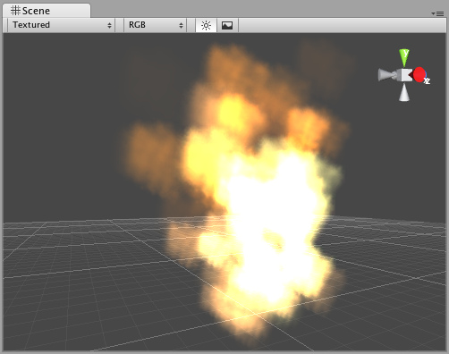

Particle Components
- Ellipsoid Particle Emitter
- Line Renderer
- Mesh Particle Emitter
- Particle Animator
- Particle Renderer
- Trail Renderer
- Particle Collider
Particle Systems
Particle Systems in Unity are used to make clouds of smoke, steam, fire and other atmospheric effects. Particle Systems work by using one or two Textures & drawing them many times, creating a chaotic effect.

A Particle System included in the Standard Assets
A Particle System included in the Standard Assets
A typical Particle System in Unity is an object that contains a Particle Emitter, a Particle Animator and a Particle Renderer. The Particle Emitter generates the particles, the Particle Animator moves them over time, and the Particle Renderer draws them on the screen.
If you want your particles to interact with the world, add a Particle Collider Component to the GameObject.